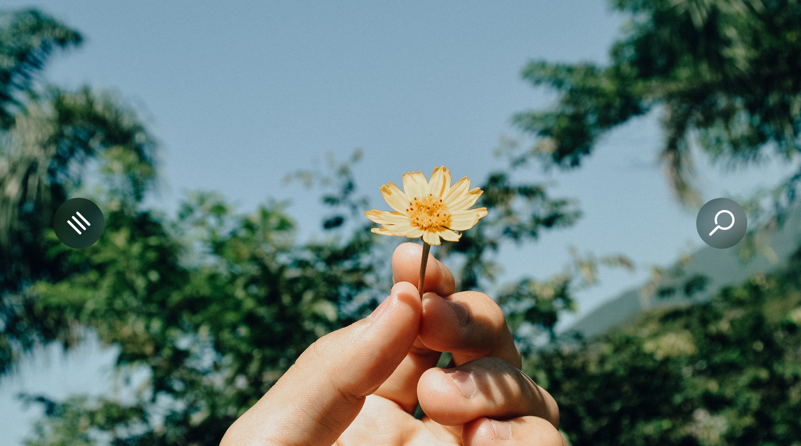
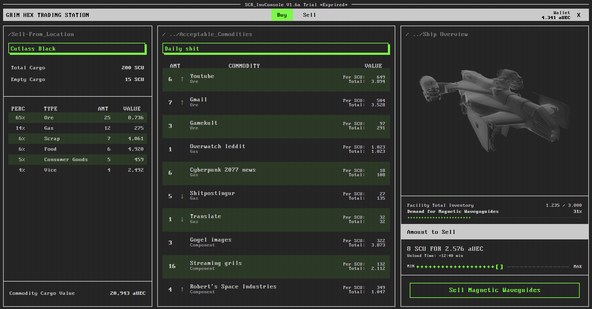
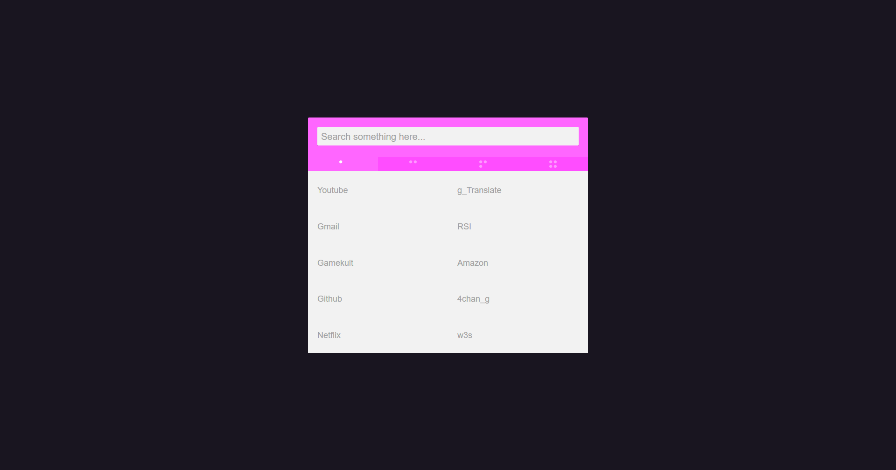

Yet another minimalist startpage, only two button to save your precious time.

■■■ Squared
Minimalist and customable startpage, tried a few things with the animations.

■■■ Star Citzen startpage
Startpage made based on Star Citzen UI.

■■■ Startpage1
A simple startpage, nothing more.
